For photography, creativity is what matters most. A flash of insight helps, but ideas do not appear from nowhere. They grow from what you have seen and learned, together with the setting you are in now.
Photography blogger Hayden Pedersen made a video that teaches us 10 simple ideas. You tweak the camera or use small, everyday objects to take more interesting shots.
Not every tweak needs post-processing. Often, small objects around us help us take good photos. Let us look at his fun ideas.
1. Shiny fishing line

People who fish often know that good nylon line is thin, strong, and clear. More important, it catches the light.
This trick is easy to use. Just pull the fishing line straight in front of the lens. The light refracts through it and makes a nice flare.
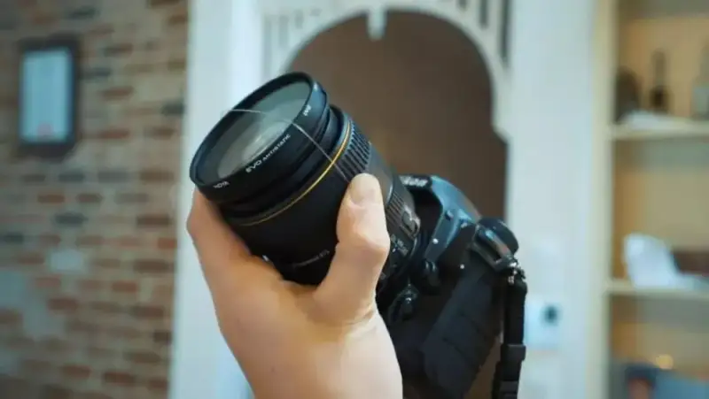
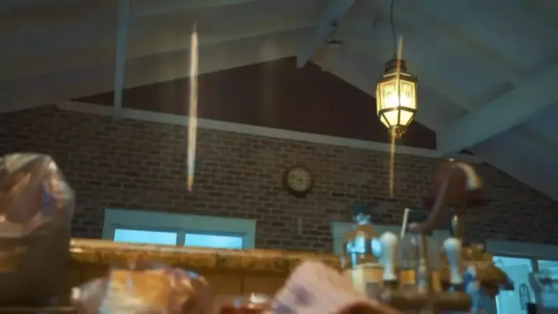
2. Sliding towel

People who shoot video often know that it is hard to keep steady while you move. For most people, a good stabilizer is expensive, and they do not use it often.
At home, there is a good alternative. Put the camera on a towel, and pull the towel as you shoot. It gives you a steady result.
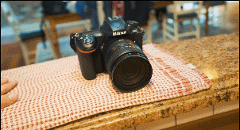
3. Plastic wrap

Use a clear plastic bag that most homes have. Add color to the bag, then slip it over the lens. You get photos that look as if you used a colored filter.
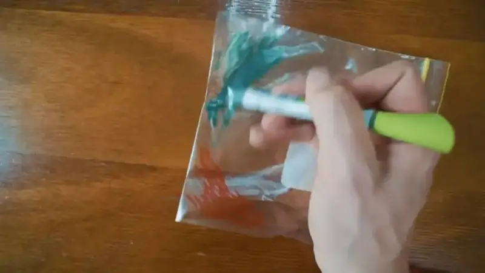
4. Swivel chair
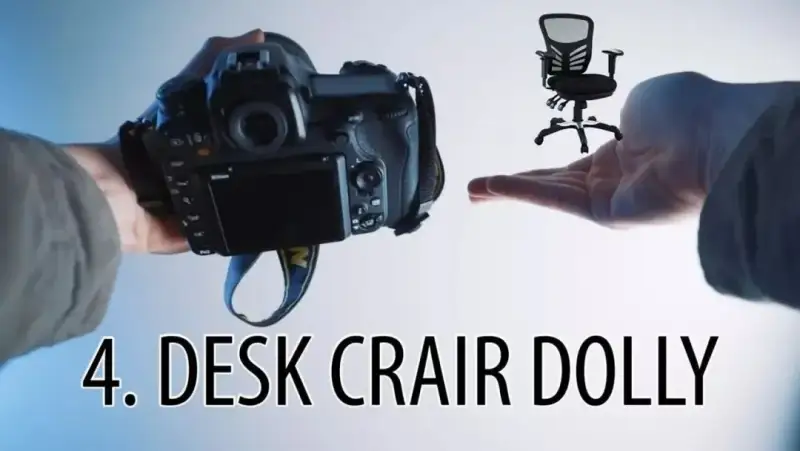
This works like the towel above, and it acts as a stabilizer. The plus is that you can change the angle at any time. With a good swivel chair, you can also change the height at any time.
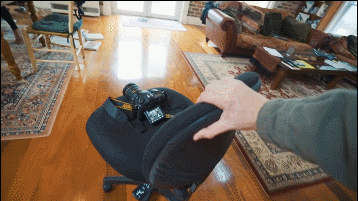
5. Vaseline
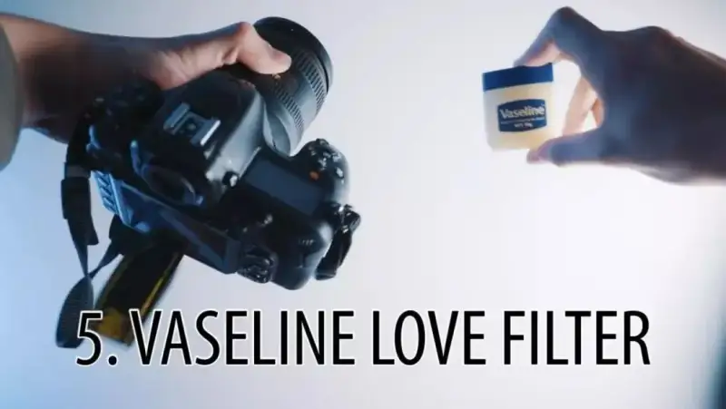
Spread Vaseline on glass and you get those soft, hazy photos. But do not be silly and put it straight on your lens. Use a cheap filter, put the Vaseline on the filter, and then mount it on the lens to shoot.
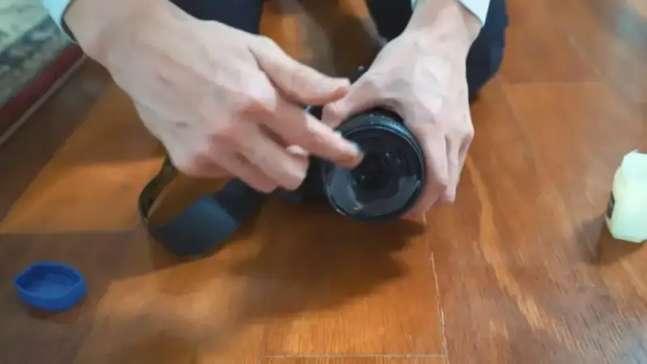
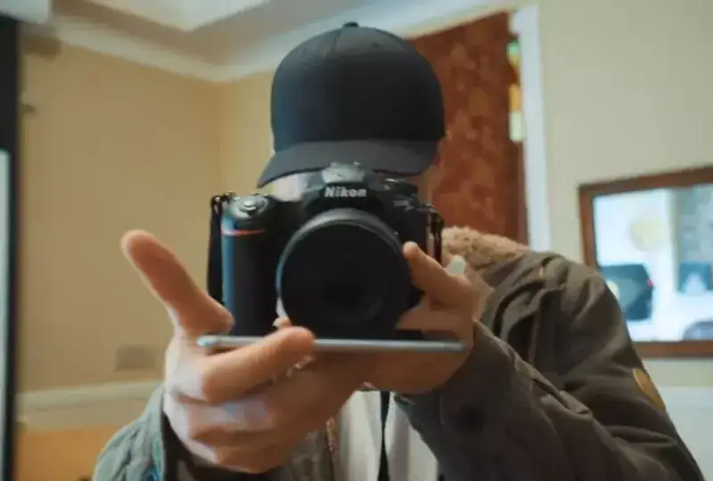
6. Light a small fire
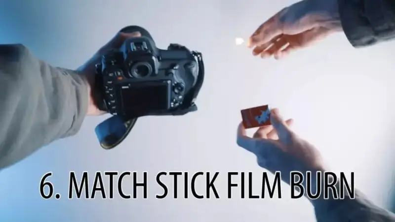
Do not light a big fire. Just strike one small match. This makes a blurred foreground in front of the lens, and you shoot a hazy glow. But keep it away from the lens. If it is too close, it will burn the lens coating.
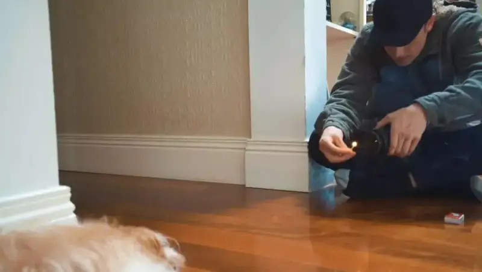
7. Mirror reflection
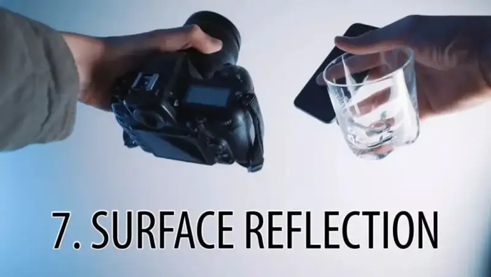
When your phone is off, the screen acts like a mirror. Many people already use it that way. Your phone has another use. As a reflective surface, hold it in front of the lens when you shoot, and you easily get a reflection.
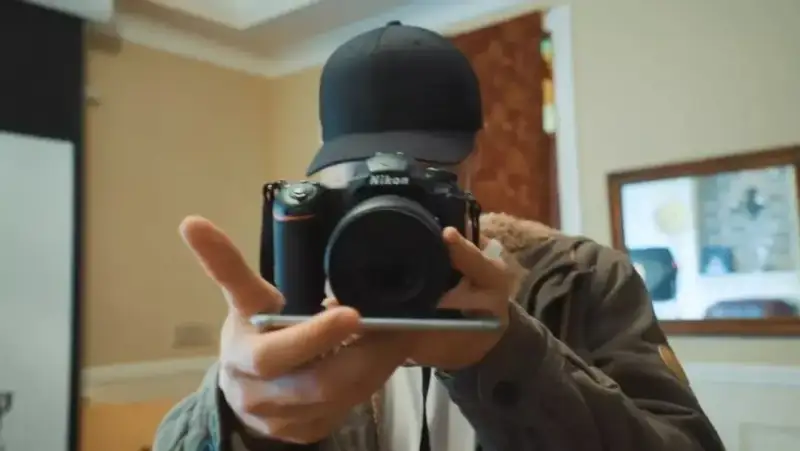
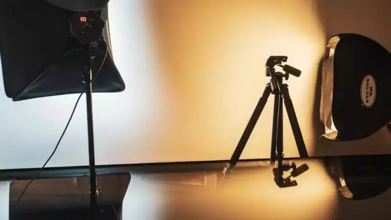
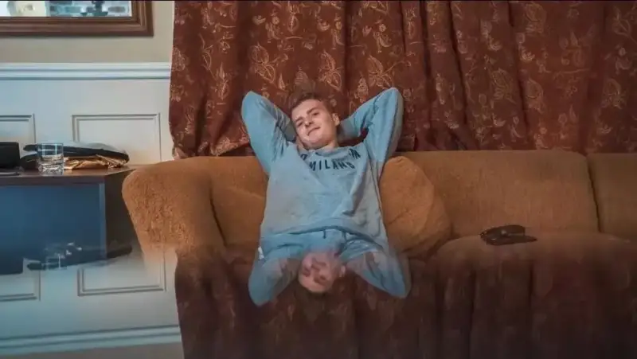
8. Play with light
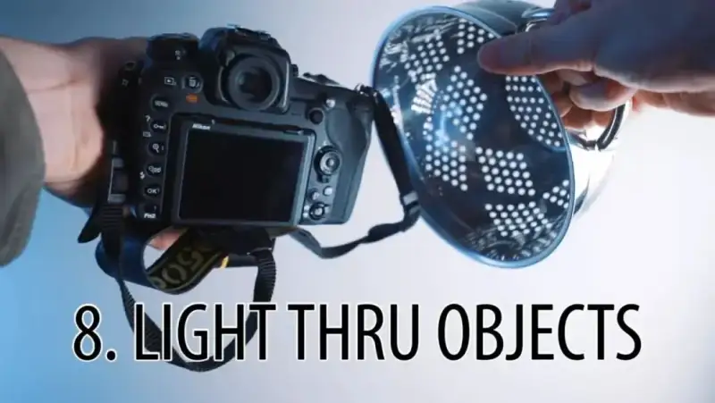
Photography is just playing with light. Look around for small props that make light more interesting as it passes through. Use anything you find. Do not box yourself in with fixed ideas.
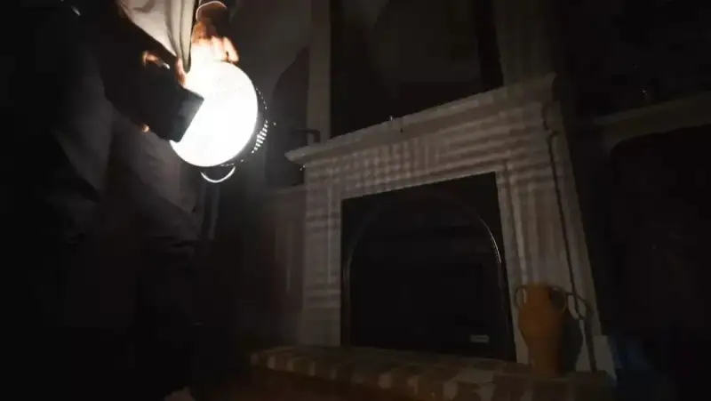
9. Lens off the camera
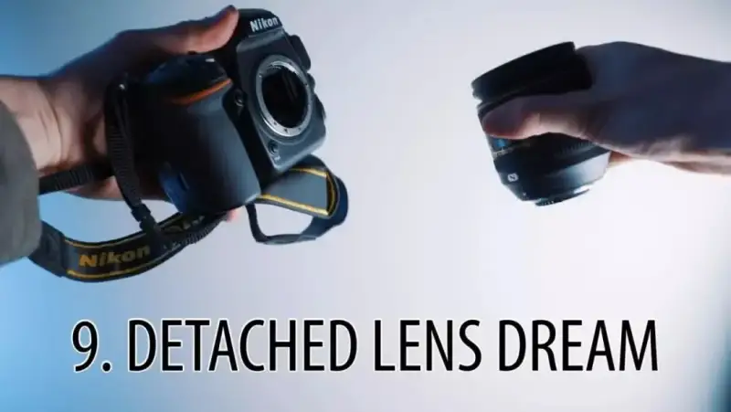
A lens does not have to be on the camera to take a photo. I once showed a Lensbaby look. You get it by taking the lens off and holding it at an angle to the body. Try it. Different angles give different results.
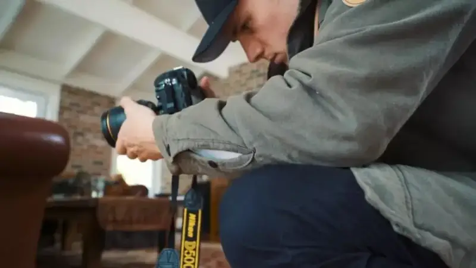
10. Tripod pointing down
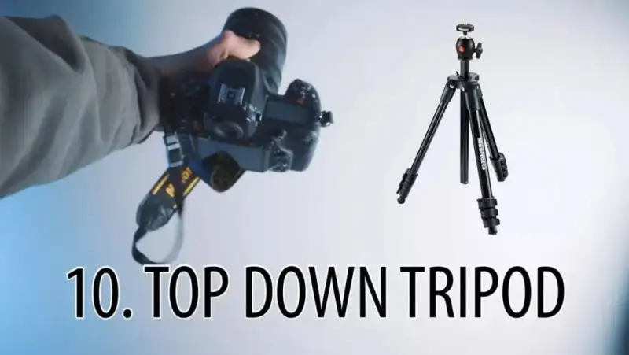
This one is simple. If you want to shoot the ground, you need to change the angle of the tripod. On many high-end tripods this is no problem. On entry-level tripods, you really need it. It is easy. Just find a good point to rest on.
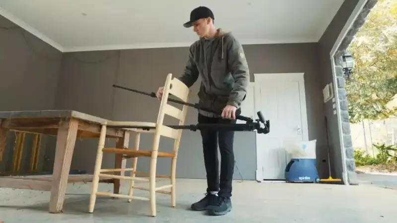
Some people who watch this kind of video say things like "the photos do not even look that good." What I want to say is that these videos exist to spark our creativity. They are not made to win photo awards.